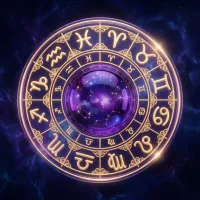
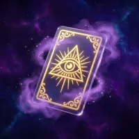
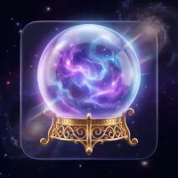

Vaše útočiště pro
klid duše
Mystická Hvězda je víc než vesmírná předpověď. Je to bezpečný přístav v digitálním světě, kde najdete hlubší pochopení, naději a směr, když se cítíte ztraceni.


Naše mise
Pomáhat vám objevit vlastní vnitřní sílu. Věříme, že hvězdy nejsou rozsudek, ale kompas, který vám pomůže stát se vědomým tvůrcem svého vlastního osudu.

Osobní přístup
Za každým datem narození vidíme živý příběh. Nepoužíváme strojové šablony, ale ke každému vhledu přistupujeme s maximální citlivostí, empatií a odbornou péčí.

Absolutní důvěra
Vaše tajemství a soukromí jsou pro nás posvátné. Veškerá data a výklady podléhají nejpřísnější ochraně, aby Mystická Hvězda zůstala vaším bezpečným prostorem.
Výkladů měsíčně
Hvězdné hodnocení
Spokojených duší
Duchovní podpora
Srdce Mystické Hvězdy
Naši odborníci nejsou jen teoretici, ale lidé s hlubokou empatií a letitou praxí, kteří zasvětili svůj život pomoci druhým.
Elena Hvězdná
"Astrologie pro mě není o určování osudu, ale o pochopení nástrojů, které nám byly dány do vínku, abychom mohli žít šťastně."
Jan Mystik
"Karty jsou zrcadlem našeho podvědomí. Mým úkolem je pomoci vám přečíst obraz, který se v nich odráží."
Z vášně pro hvězdy
až k digitální svatyni
Na začátku byla jednoduchá myšlenka: zpřístupnit hlubokou moudrost astrologie a tarotu každému, kdo hledá odpovědi. To, co začalo jako malý projekt skupiny nadšenců, se rozrostlo v nejmodernější českou platformu pro digitální spiritualitu.
Spojujeme tradiční hermetické vědy s moderními technologiemi a psychologií. Naše výpočty jsou astronomicky přesné, ale náš projev zůstává lidský, laskavý a empatický.
Vstoupit do Premium světa